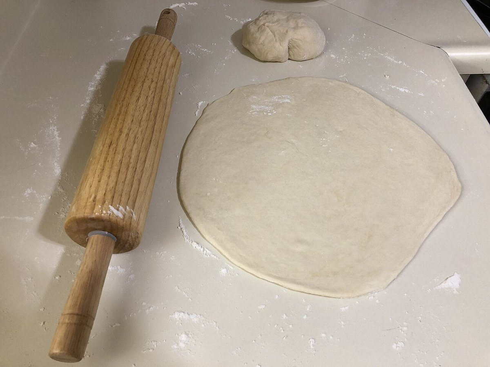
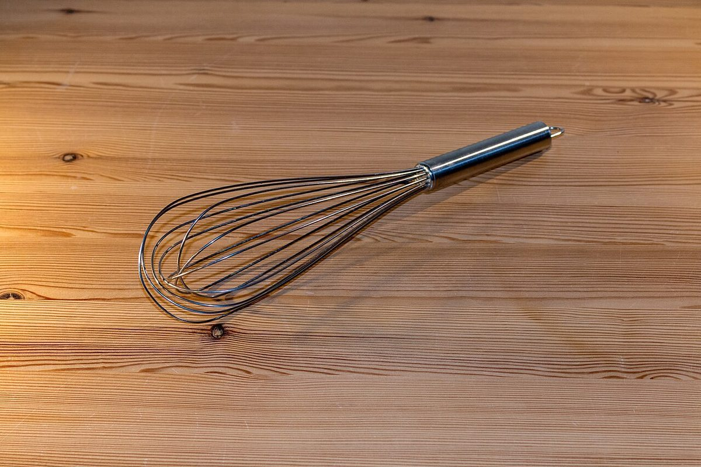

クレープ店(カフェ) / 茨城県行方市
ニシタニクレープ
茨城県行方市にあるクレープ店「ニシタニクレープ」のご案内ページです。営業時間やメニューなど、詳しいことは準備中。まずはInstagramをのぞいてみてください。

制作側の連想
丸い生地を折っていくと、5ページになる。
店名の由来や、お店の考え方は分かりません。制作側は「クレープ」という言葉から、丸く焼いた生地が折りたたまれ、扇の形になっていく様子を連想しました。そこで、このサイトの5つのページを「丸 → 半 → 扇 → 巻 → 錐」という折りの段階に見立てています。お店の理念・由来とは無関係な、制作側の連想です。
イメージ写真
粉、泡立て器、麺棒、紙の折り目。
写真は行方市やお店の写真ではありません。「生地ができるまで」のイメージで選んだ、国外・撮影地不明のフリー素材です。




ご案内
お店のこと(確認できたものだけ)
| 所在地 | 〒311-3515 茨城県行方市井上413-2 |
|---|---|
| 電話 | なし |
| 営業時間 | 準備中 |
| 定休日 | 準備中 |
| ご予約 | 準備中 |
| 駐車場 | 準備中 |
| SNS | Instagram @nishitanicrepe |